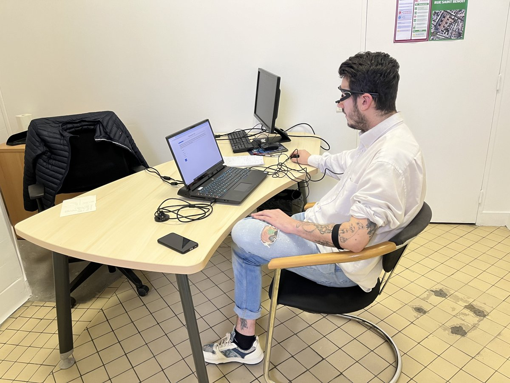

01 / Longitudinal research
Multimodal-Multisensor
Longitudinal anxiety research combining eye-tracking, cardiac recordings and questionnaire-based psychometric assessment.
Read paper Repository Questionnaire demo
Evidence note: Released group summaries lack complete participant links.

View full figureStudy pipeline
- 01 / Record Signals + responses
- 02 / Analyse Longitudinal measurements
- 03 / Report Group summaries